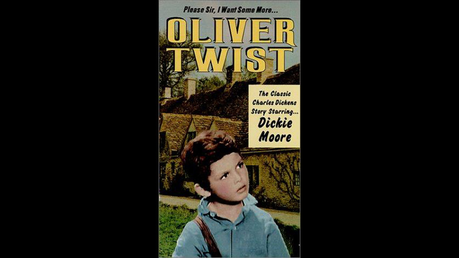

1933

CAST
Oliver Twist
-
Dickie Moore
Fagin
-
Irving Pichel
Bill Sikes
-
William "Stage" Boyd
Nancy
-
Doris Lloyd
Mr. Brownlow
-
Alec B. Francis
Mr. Bumble
-
Lionel Belmore
Widow Corney
-
Tempe Pigott
Jack Dawkins, "The Artful Dodger"
-
Sonny Ray
Noah Claypole
-
Bobby Nelson
Rose Maylie
-
Barbara Kent
Mr. Grimwig
-
Harry Holman
Mr. Sowerberry, undertaker
-
Nelson McDowell
Mrs. Sowerberry
-
Virginia Sale
Toby Crackit
-
George K. Arthur
Charles Bates
-
George Nash
Chitfing
-
Clyde Cook
CREATIVE TEAM
Director
-
William J. Cowen
Screenplay
-
Elizabeth Meehan
BACKGROUND
A 1933 American pre-Code film directed by William J. Cowen. It is the earliest sound version of the novel. It stars Dickie Moore as Oliver, Irving Pichel as Fagin, Doris Lloyd as Nancy, and William "Stage" Boyd as Bill Sikes. Pichel played Fagin without resorting to any mannerisms which could be construed as offensive.
Released by Monogram Pictures, the film was made on an extremely low budget. It never really achieved much success and was out of circulation for many years, but resurfaced on television in the 1980s.